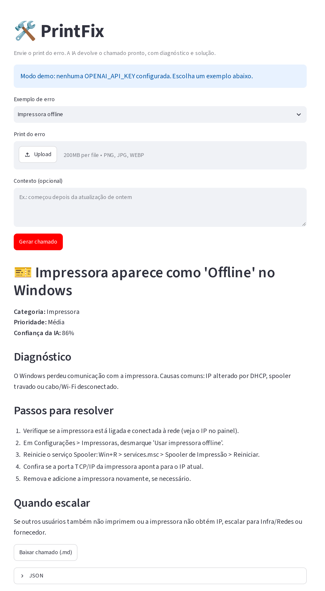

Stack
- Python 3.10+
- Streamlit
- Pydantic
- LLM com visão
- pytest
- GitHub Actions
- HTML/CSS/JS
12 testes automatizados
Cobrem o modelo do chamado, a leitura do JSON do modelo, o modo demo e a exportação em Markdown. Rodam a cada push no GitHub Actions.
IA aplicada a suporte de TI
Cole o print do erro e receba o chamado de helpdesk pronto, com diagnóstico e passo a passo.
O usuário manda uma captura de tela, um modelo de visão lê o erro e o PrintFix devolve um chamado estruturado: categoria, prioridade, causa provável, o que fazer e quando escalar.
Escolha um dos erros de exemplo ou arraste um print seu. Os chamados abaixo são os mesmos do modo demo do app.
1. Print do erro
No app em Python, o print vai para um modelo de visão e a resposta é validada antes de virar chamado. Aqui no site, os três exemplos usam as mesmas respostas do modo demo.
2. Chamado gerado
Lendo o print...
O usuário cola ou envia a captura de tela do erro, do jeito que ela estiver.
Um LLM com visão lê a tela e responde em JSON. O Pydantic valida e normaliza a categoria e a prioridade.
Sai um chamado pronto para o técnico: diagnóstico, passos numerados e o critério para escalar. Exporta em Markdown.
A análise com IA roda no app em Python (Streamlit). Esta é a tela do modo demo.

Cobrem o modelo do chamado, a leitura do JSON do modelo, o modo demo e a exportação em Markdown. Rodam a cada push no GitHub Actions.
git clone https://github.com/farrei/printfix.git
cd printfix
pip install -r requirements.txt
streamlit run app.py # abre em modo demo, sem chave de API
pytest # 12 testes